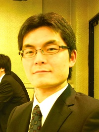

頼 燎平

| 研究テーマ | 黒リン単結晶 |
|---|---|
| 出身 | 広島 |
| 卒業論文題目 | 黒リンの電子状態の実験的研究 |
| 修士論文題目 | 黒リン単結晶の電子状態と非平衡キャリアダイナミクスの研究 |
| 国際学会 | 3. 学会名：The 20th Hiroshima International Symposium on Synchrotron Radiation 題目：Anisotropic electronic states and carrier dynamics of black phosphorus revealed by Tr-ARPES 場所：Hiroshima Univ., Japan (2016.3) ポスター発表 2. 学会名：The 2015 Korean - Japanese Student Workshop 題目：Carrier Dynamics of Black Phosphorus 場所：Busan, Korea (2015.12) 口頭発表 1. 学会名：15th International Conference on the Formation of Semiconductor Interfaces 題目：Anisotropic electronic states and carrier dynamics of black phosphorus 場所：Hiroshima, Japan (2015.11) 口頭発表 |
| 国内学会 | 1. 学会名：日本物理学会 2015年・秋季大会 題目：角度分解光電子分光法による黒リンの異方的電子状態およびキャリアダイナミクス 場所：関西大学 (2015.9) 口頭発表 |
| 受賞歴 | 2. 賞名：Best Presentation Award The 2015 Korean - Japanese Student Workshop 受賞年月：2015.12 1. 賞名：卒業論文発表優秀賞 受賞年月：2015.3 |